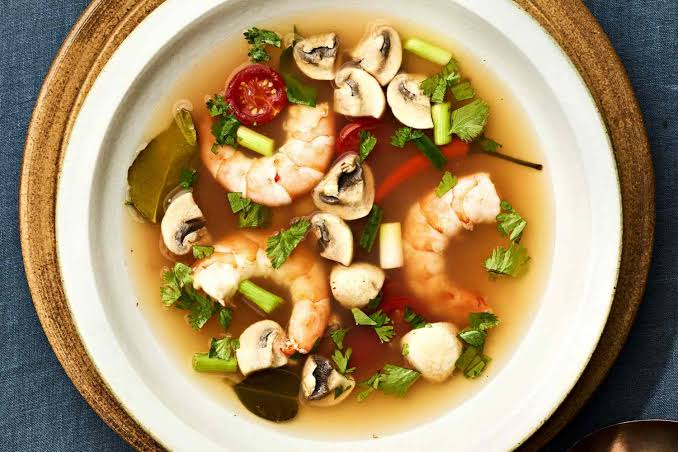

Food & Festivals • Eating Guide
16 Thai foods you shouldn't miss — and where to eat them in Pattaya & Bangkok
Tom yum goong, moo ping, boat noodles, mango sticky rice and 12 more — with named places to find each one in both cities, plus what you should expect to pay in 2026.
Read the guide →